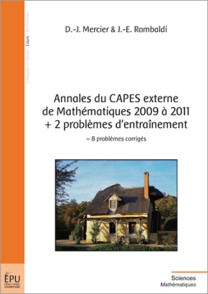
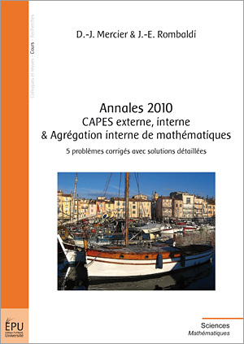
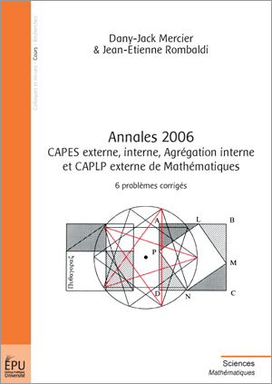
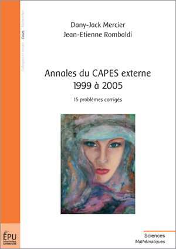

|
Agrégation
Interne 2016. Deux compositions de mathématiques. |
 |
Agrégation interne de mathématiques de 2005
à 2013. Publibook. |
 |
Capes
Externe et CAPLP
de Mathématiques, 2013. Publibook. |
|
|
Capes
Externe, Agrégation
Interne de
Mathématiques, 2012. Publibook. |
|
|
Capes
Externe, Interne et Agrégation Interne de
Mathématiques, 2011. Publibook.
|
|  |
CAPES
externe de Mathématiques 2009 à 2011. Publibook. |
|  |
Capes
Externe, Interne et Agrégation Interne de
Mathématiques, 2010. Publibook. |
 |
Annales
Agrégation Interne, 2008-2010. Publibook. |
|
|
Capes Externe, Interne et Agrégation Interne
de Mathématiques, 2009. Publibook. |
 |
Capes Externe
de Mathématiques 2006 à 2008 et
Agrégation Interne 2008. Publibook.
|
 |
Agrégation Interne, 2005-2007. Publibook. |
|  |
Capes et
agrégation interne de Mathématiques, 2006. Publibook. |
|  |
Capes
externe de Mathématiques, 1999 à 2005. Publibook.
Dany-Jack et moi même offrons le livre. Il suffit de cliquer sur l'image.
|
 |
Capes
externe, interne et agrégation interne de
Mathématiques. Publibook. |